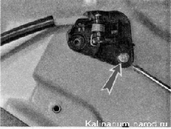
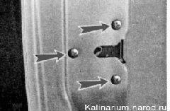
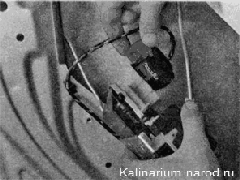
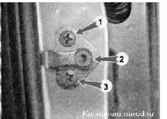
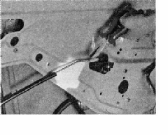

Замок передней двери снятие, установка и регулировкаСнятие 1. Подготавливаем автомобиль к выполнению работы. 2. Снимаем обивку двери. 3. Отсоединяем тяги наружной ручки от замка. 4. Крестовой отверткой отворачиваем винт крепления внутренней ручки замка... 
...и три винта крепления замка. Извлечь замок мешает направляющая стеклоподъемника. Чтобы вынуть замок, можно снять с него тяги, а можно отодвинуть направляющую, предварительно отвернув ее болты и гайки. 5. Извлекаем замок из двери и отсоединяем от него колодку жгута проводов (показано с отсоединенной направляющей). 6. Для снятия фиксатора замка, помечаем его положение на стойке кузова. 7. Ключом TORX Т40 выворачиваем палец фиксатора 2. Ударной отверткой с крестовым наконечником отворачиваем два винта крепления фиксатора 1 и 3. 8. Снимаем фиксатор замка и регулировочные прокладки. Установка 1. Устанавливаем замок в обратной последовательности, смазав его пластичной смазкой. 2. Фиксатор замка устанавливаем на место, совмещая ранее сделанные метки либо перемещая фиксатор в пределах прорезей под винты его крепления, добиваемся четкой фиксации двери в закрытом положении и легкого ее отпирания. 3. Регулируя длину тяг наружной ручки двери и внутренней ручки замка (переставив пластмассовый наконечник на резьбовой части тяги), добиваемся четкого открывания замка.  |